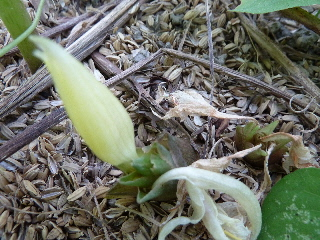
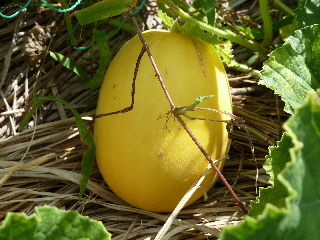
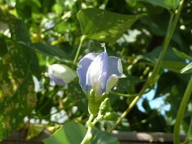
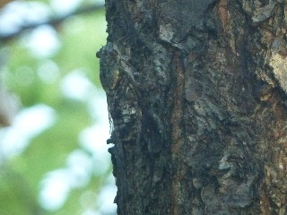

遊びで植物を育てよう
2012/08/05
今年はプルーンが不作みたいです。
プルーンに色が付いたので収穫しました。

でもこれ、小さいです。
今、木になっている実の数も少な目です。
残念です。
【ページTOP】
【8月TOP】
【園芸TOP】
2012/08/12
みょうがの花が咲いていました。
地面から花が咲いていました。

花の根本にはミョウガがあります。
今年は雨が少ないせいか、まだ小さいです。
【ページTOP】
【8月TOP】
【園芸TOP】
2012/08/26
味瓜が甘いといいです。
味瓜がピークです。

スイカが終わったので、丁度いいタイムングで収穫です。
【ページTOP】
【8月TOP】
【園芸TOP】
2012/08/26
シカク豆ってどうよ？
シカク豆はすくすく育っています。

つるがいっぱい伸びているし、花もちゃんと咲いているんですが、実があまり出来ないです。
こんなものなのかなー？
今の季節は実が出来ないのかな？雨が少ないかなかな？
でも、これが普通だったら嫌だな。結構苗が高かったのに、ちょっとしか食べれなかったらガッカリです。
【ページTOP】
【8月TOP】
【園芸TOP】
2012/08/26
ツクツクボウシが鳴いていました。
畑でツクツクボウシが鳴いていました。

とっても近くで鳴いていたので、うるさかったです。
あまり意識した事なかったですが、ツクツクボウシってそこらへんにいたんですね。
山の方にいるセミかと思っていました。
【ページTOP】
【8月TOP】
【園芸TOP】
過去の日記
【2024年8月の日記】
【2023年8月の日記】
【2022年8月の日記】
【2021年8月の日記】
【2020年8月の日記】
【2019年8月の日記】
【2018年8月の日記】
【2017年8月の日記】
【2016年8月の日記】
【2015年8月の日記】
【2014年8月の日記】
【2013年8月の日記】
【2012年8月の日記】
【ページTOP】
【8月TOP】
【園芸TOP】
畑仕事じゃないよ。
【おいしいものを食べよう。】【しっかり寝よう。】
【ソロ活をしよう!】【季節感のあることをしよう。】【動画視聴はほどほどに。】【当サイトの全てのコンテンツは無断転載禁止です。】